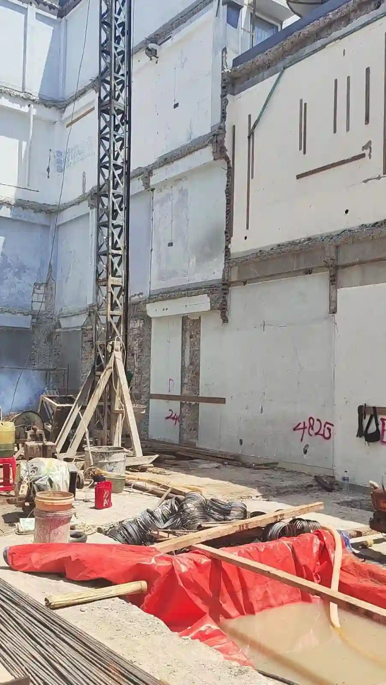
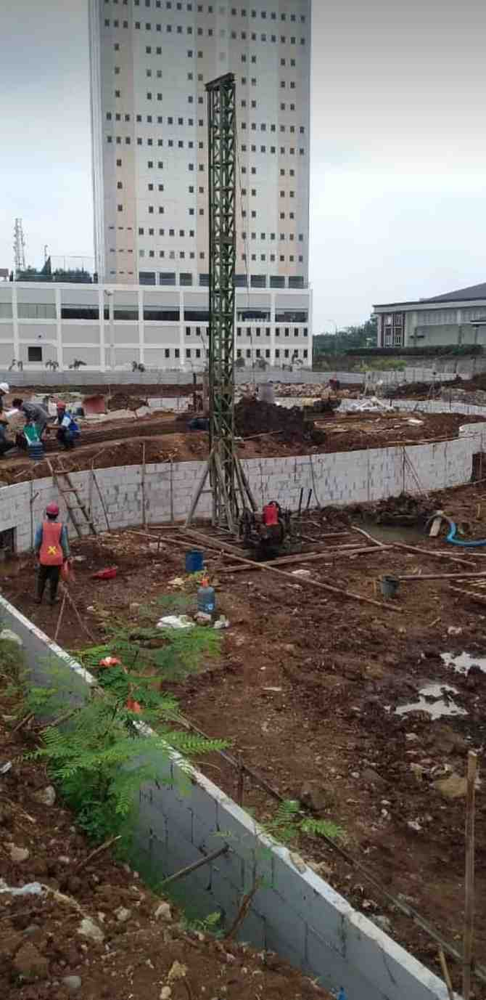

Harga Bore Pile 2026
Lihat harga terbaru untuk semua diameter bore pile terbaru 2026.
Bore pile diameter 40cm adalah ukuran paling ideal untuk bangunan komersial seperti ruko, kantor, rumah sakit, dan rumah pribadi 2-3 lantai di Jakarta. Kalkulator ini dibuat untuk menghitung estimasi total biaya jasa borepile dari harga diameter 40cm (mesin & manual), bisa mengatur harga sendiri sesuai keinginan. Dibuat oleh tim Agung Perkasa Borepile dari data proyek nyata yang kami kerjakan di lapangan.
Estimasi Total Biaya JASA BOR
Berikut harga JASA PENGEBORAN SAJA (belum termasuk material beton & besi) untuk wilayah Jakarta dan sekitarnya. Kedalaman pengeboran bergantung pada diameter dan kondisi lapisan tanah, di lapangan kami pernah tembus hingga kedalaman 25-30meter, pastikan cek sondir dulu agar mengetahui kedalaman yang tepat untuk pengeboran hingga mencapai tanah keras.
| Diameter | Harga (Rp/m) | Kedalaman Maks | Cocok Untuk |
|---|---|---|---|
| 30 cm | 120.000 | 30 meter | Rumah 1-2 lantai, jembatan kecil, |
| 40 cm | 135.000 | 30 meter | Ruko, kantor 2 lantai, jembatan kecil |
| 50 cm | 190.000 | 30 meter | Gudang, pabrik kecil |
| 60 cm | Hubungi Kami | 30 meter | Hotel 3-4 lantai |
| 80 cm | Hubungi Kami | 30 meter | Gedung 5-8 lantai |
| Diameter | Harga (Rp/m) | Kedalaman Maks | Cocok Untuk |
|---|---|---|---|
| 20 cm | 70.000 | 10 meter | Area sangat sempit |
| 25 cm | 75.000 | 10 meter | Gang kecil |
| 30 cm | 80.000 | 10 meter | Rumah 1-2 lantai (tanah padat) |
| 40 cm | 100.000 | 10 meter | Bangunan lebih dari 1 lantai (tanah padat) |
| Diameter | Harga (Rp/m) | Daya Dukung | Cocok Untuk |
|---|---|---|---|
| 30 cm | 120.000 | 15-25 ton | Rumah 1-2 lantai |
| 40 cm | 135.000 | 25-40 ton | Ruko, kantor, rumah 2-3 lantai |
| 50 cm | 190.000 | 40-60 ton | Gudang, pabrik kecil |
Daya dukung di atas adalah estimasi untuk kedalaman 10-15 meter di tanah keras Jakarta.
Daya dukung 25-40 ton, cukup untuk ruko, kantor, rumah sakit, dan rumah mewah 2-3 lantai.
Dibandingkan diameter 30cm (kurang kuat) & 50cm (lebih mahal), diameter 40cm menawarkan keseimbangan biaya dan kekuatan optimal.
Bisa dikerjakan dengan bore pile mesin (mini crane) untuk proyek besar, maupun manual untuk area terbatas.
Diameter 40cm adalah ukuran standar untuk proyek komersial di Jakarta.

Daya dukung bore pile diameter 40cm bervariasi tergantung kedalaman dan kondisi tanah:
Untuk ruko 2-3 lantai standar, kedalaman 10-15 meter sudah cukup.
Butuh harga khusus untuk jasa bore pile di Jakarta? Lihat harga bore pile Jakarta →
Mesin: Rp3-5jt (Jabodetabek) | Manual: Rp1-2jt
Bore pile mesin: 200m | Manual: 100m, di bawah itu bisa menghubungi admin kami
Tergantung volume, biasanya (Rp800.000 - Rp1.200.000/rit)
Wajib ada karena sangat penting untuk menentukan kedalaman pondasi yang tepat

Proyek: Ruko 3 lantai di Lebak Bulus, Jakarta Selatan
Spesifikasi: Ø40cm, kedalaman 15m, 24 titik
Biaya: 15m × Rp135.000 × 24 = Rp48.600.000
+ mobilisasi Rp3,5jt = Rp52.100.000
Waktu: 8-10 hari kerja
Proyek: Rumah mewah 2 lantai di Jakarta Barat
Spesifikasi: Ø40cm, kedalaman 8m, 16 titik
Biaya: 8m × Rp100.000 × 16 = Rp12.800.000
+ mobilisasi Rp1,5jt = Rp14.300.000
Waktu: 6-8 hari kerja
Komitmen & Garansi Mutu
Kami memberikan garansi penuh atas kualitas dalam pengerjaan proyek. Kami menjamin kualitas terbaik karena didukung oleh tim ahli kami yang sangat berpengalaman membuat pondasi dalam (khususnya bore pile)
Sangat cukup. Dengan kedalaman 12-15 meter, diameter 40cm mampu menahan beban ruko 3 lantai dengan aman. Daya dukung mencapai 25-40 ton per titik.
Standar harga jasa bor diameter 40cm: mesin Rp135.000/m, manual Rp100.000/m untuk jasa pengeboran, perakitan besi tulangan, dan pengecoran beton (harga di samping belum termasuk harga material).
Untuk rumah 2 lantai standar, 30cm sudah cukup. Tapi jika Anda ingin keamanan lebih terjamin atau merencanakan tambahan lantai di masa depan, 40cm adalah pilihan yang lebih baik.
Untuk ruko atau kantor 2-3 lantai dengan luas bangunan 150-300m², jumlah titik ideal antara 16-25 titik. Konsultasikan dengan tim teknis kami untuk perhitungan yang akurat.
Betul. Kami melayani area Jabodetabek (Jakarta, Bekasi, Bogor, Depok, Tangerang).
Ya. Kami melayani seluruh area pulau Jawa saja.
Dapatkan penawaran harga untuk bore pile diameter 40cm
Konsultasi GratisInsight pondasi dan konstruksi untuk membantu keputusan proyek Anda.
 Harga
Harga
Lihat harga terbaru untuk semua diameter bore pile terbaru 2026.
 Perbandingan
Perbandingan
Perbandingan lengkap Bore Pile mesin dan manual agar Anda dapat memilih jenis pondasi yang tepat.

HargaHarga Bore Pile Diameter 50cm untuk proyek rumah, ruko, dan bangunan kecil lainnya.
Agung Perkasa Borepile melayani proyek konstruksi di wilayah Jabodetabek berikut ini.
Spesialis pondasi borepile dengan pengalaman lebih dari 10 tahun di Jakarta. Data harga dan estimasi waktu di atas merupakan akumulasi dari semua proyek nyata yang telah kami kerjakan untuk client perorangan maupun kontraktor.